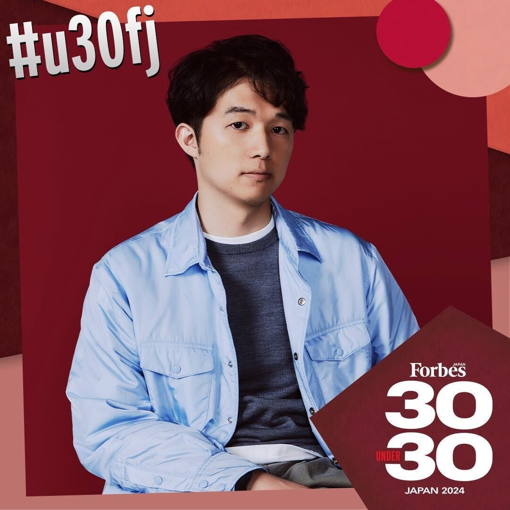
久保 駿貴
株式会社ABABA
代表取締役CEO
就活生向けスカウトサービスを展開。累計約18.2億円を調達（シリーズB含む）。
TORYUMONに関わってきた起業家たちの"いま"

株式会社ABABA
代表取締役CEO
就活生向けスカウトサービスを展開。累計約18.2億円を調達（シリーズB含む）。
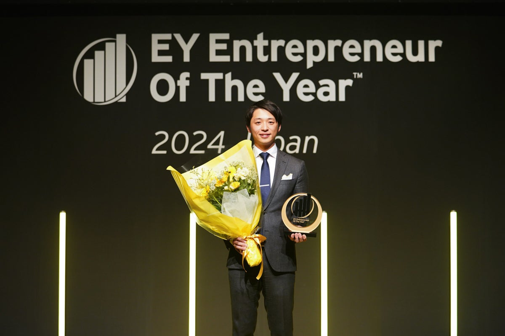
株式会社Timee（タイミー）
代表取締役CEO
スキマバイトマッチングサービスを運営。累計約403億円調達、2024年7月に東証グロース市場へ上場。
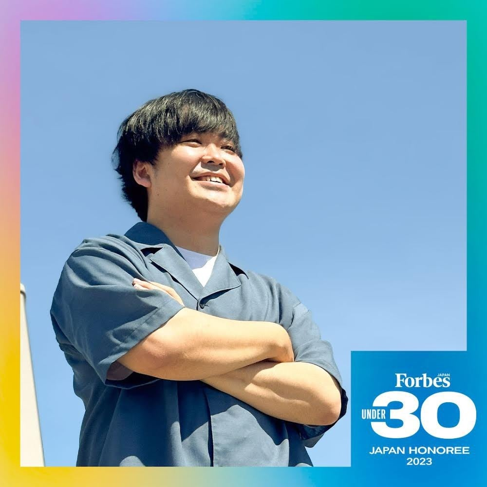
Alumnote株式会社
代表取締役CEO
OB・OGネットワーク活用プラットフォームを開発。累計約7.6億円調達、2025年7月にSeries A完了。
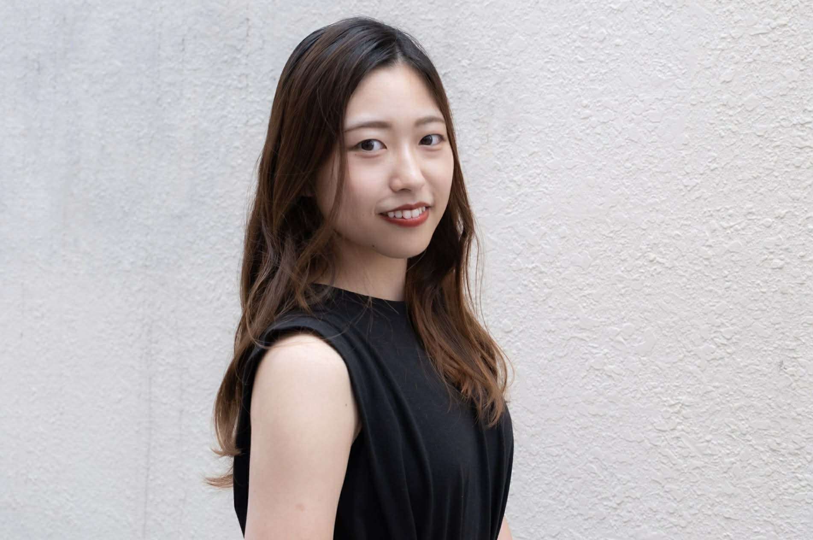
株式会社My Fit
代表取締役CEO
オンライン更年期診療「MYLILY」を展開。約4.25億円調達（シード、2024年12月時点）。
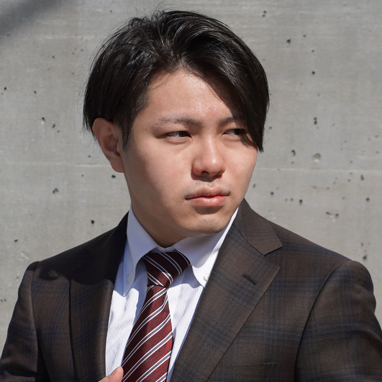
株式会社RATEL / 81RAVENS PTE.
代表取締役CEO
RATEL（1.2億円調達）に加え、シンガポール拠点の81RAVENS（約6.3億円調達）も運営。
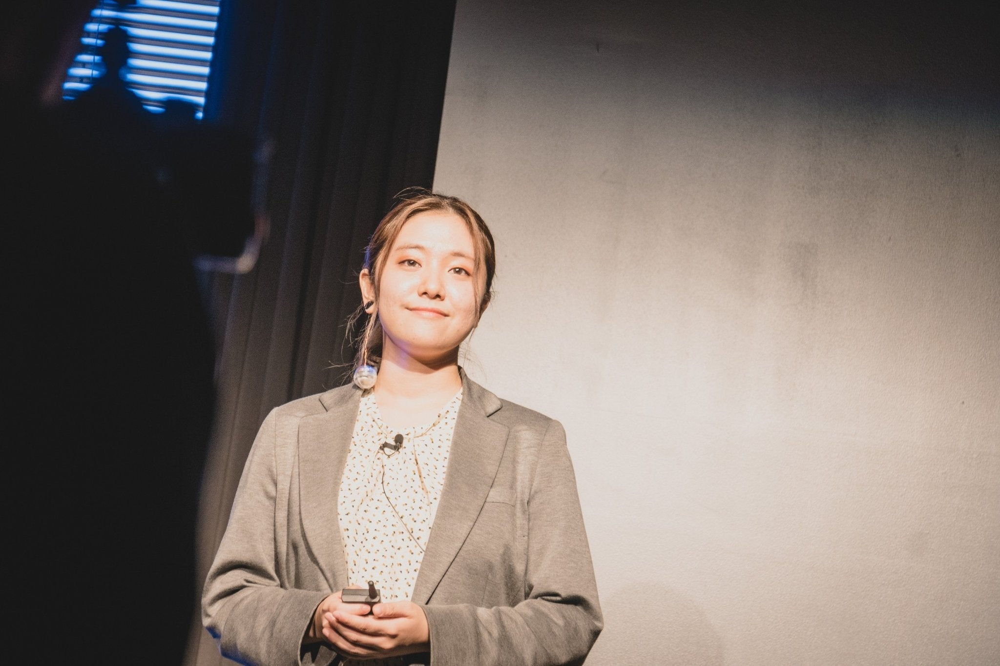
e-lamp.株式会社
代表取締役CEO
ウェアラブルデバイスからheartbeat matching「ematch」にピボット。3億円調達（ANRIから）。
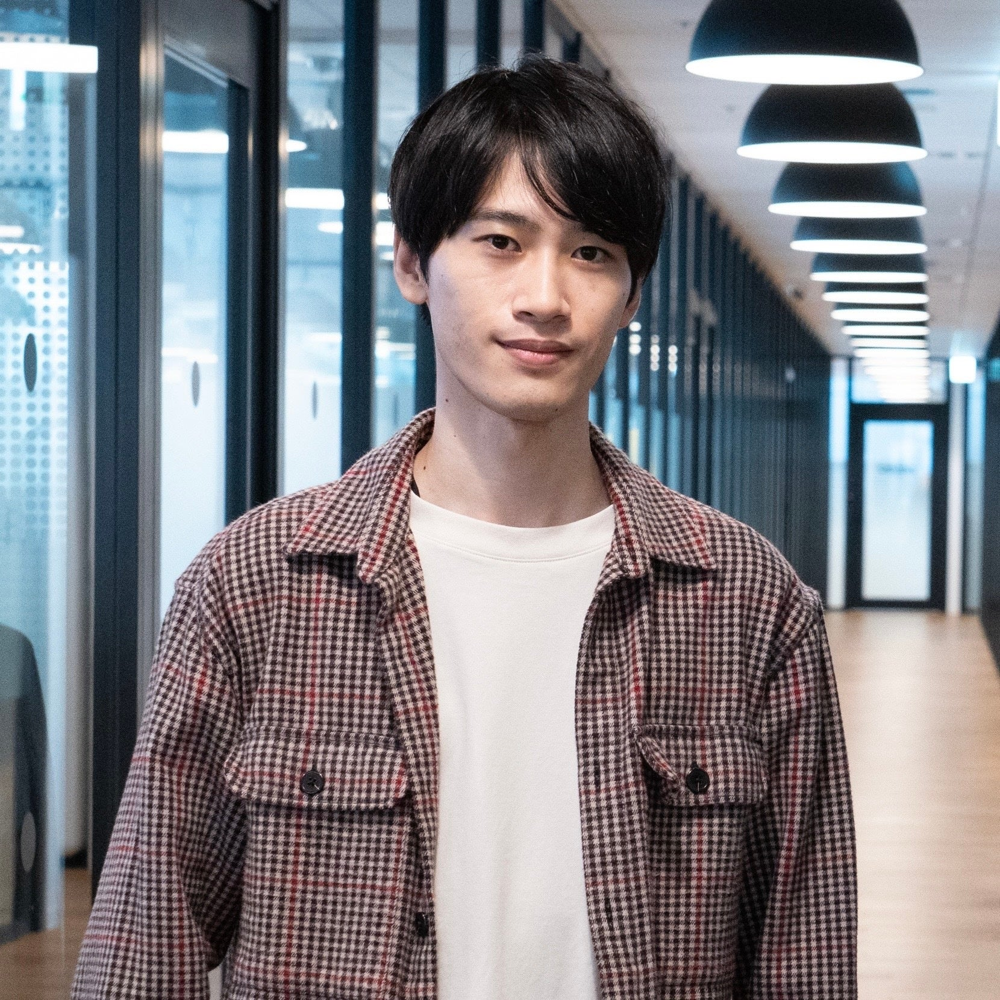
Bizibl Technologies株式会社
代表取締役CEO
ウェビナーマーケティングSaaSを提供。累計約2.43億円調達。
株式会社ElevationSpace
CEO
宇宙利用サービス（宇宙実験・材料開発）を展開。累計約3.7億円調達（Pre-Series B含む）。
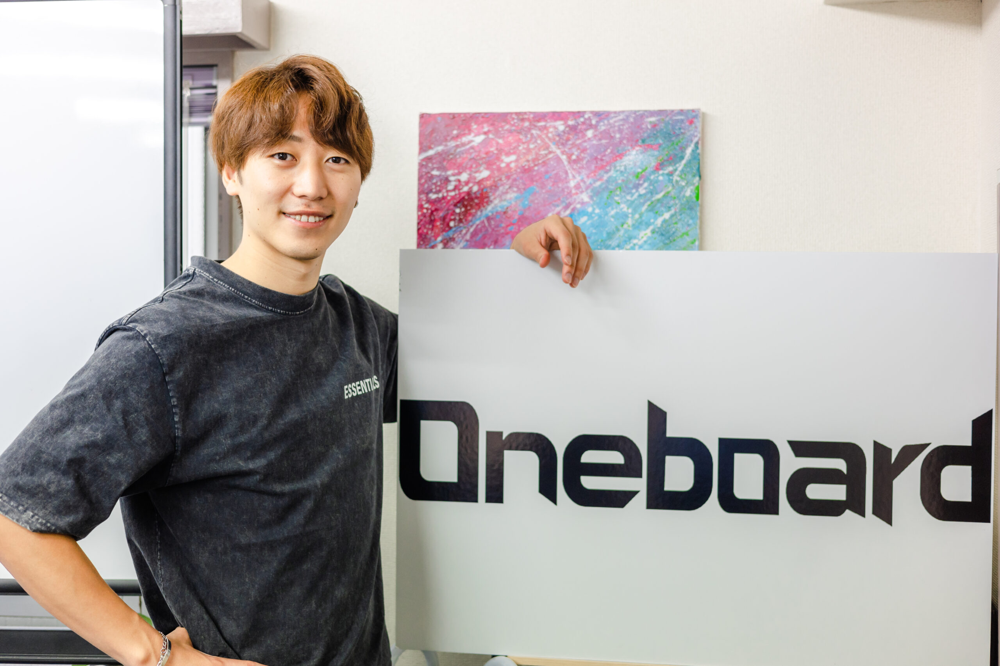
株式会社Follop
代表取締役CEO
インフルエンサーマッチングプラットフォームを運営。累計約1.4億円調達（2023年）。
株式会社Respo
CEO
EC積立決済SaaSを提供。1.2億円調達（Pre-Series A、2025年2月）。
株式会社Yondemy
CEO
子ども向け読書習慣化サービスを展開。約1.3〜1.4億円調達（Pre-Series A）。
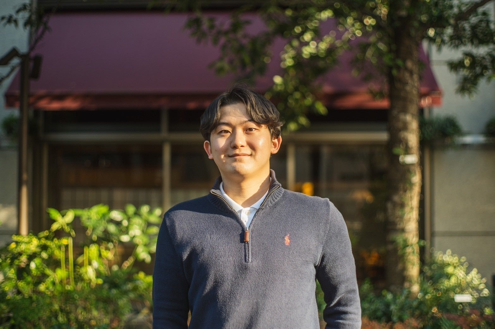
株式会社Hagino
代表取締役
アニマルスピリッツ等から6,000万円を調達（シード）。
株式会社メンテモ
代表取締役
車整備・修理サービスプラットフォームを運営。5,200万円以上調達（複数ラウンド）。
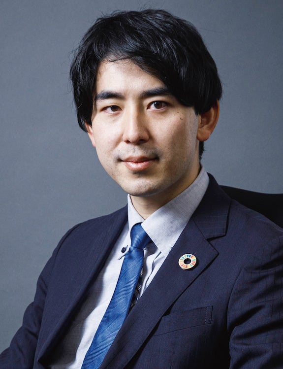
Sagri株式会社
代表取締役
衛星データ×AIで農業課題を解決。14カ国に展開。約1.55億円調達。
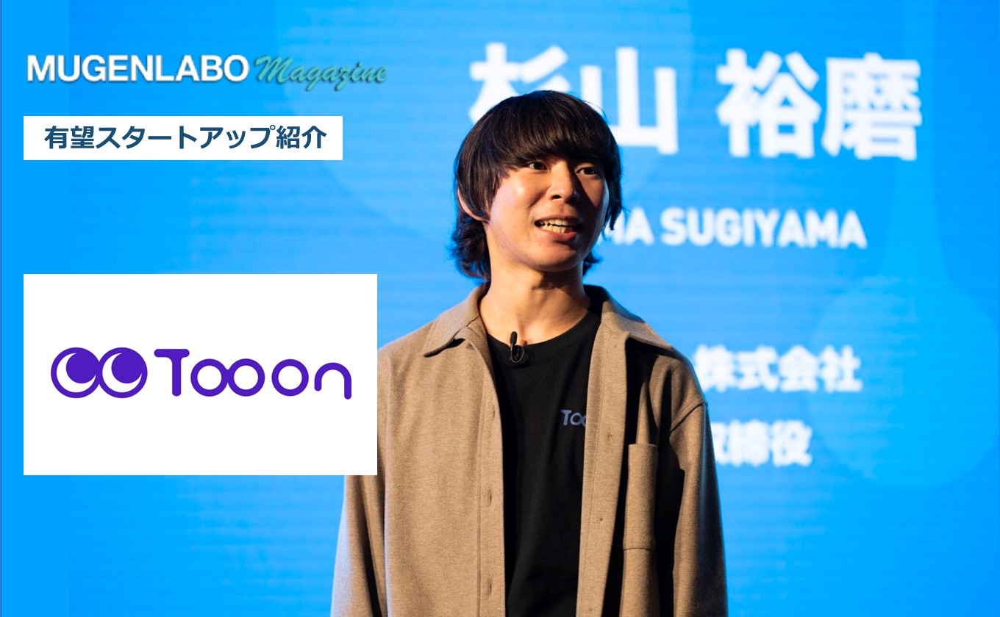
Tooon株式会社
CEO
フリーランス向け業務管理ツールを開発。Pre-Series A調達済み。
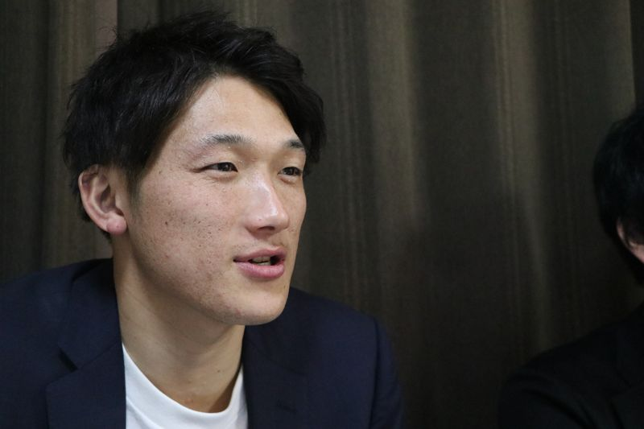
株式会社Amufi
共同代表取締役
不動産CtoC「RoomPa」を展開。East Ventures等から3,000万円調達（シード）。
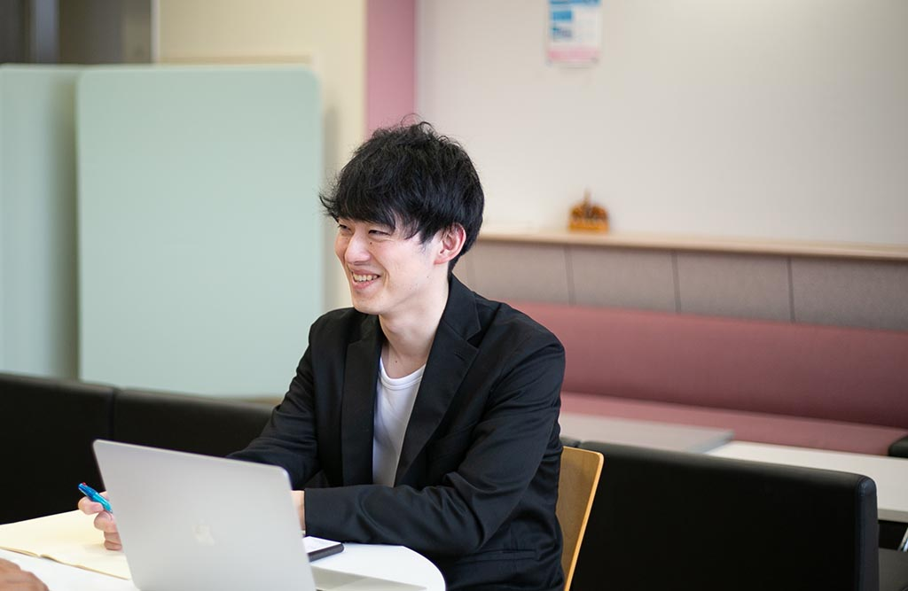
株式会社サケアイ
代表取締役
日本酒推奨アプリ「Sakeai」を運営。4,000万円調達（株式型CF、2023年11月）。
株式会社Million Production
CEO
累計約2億円超を調達。
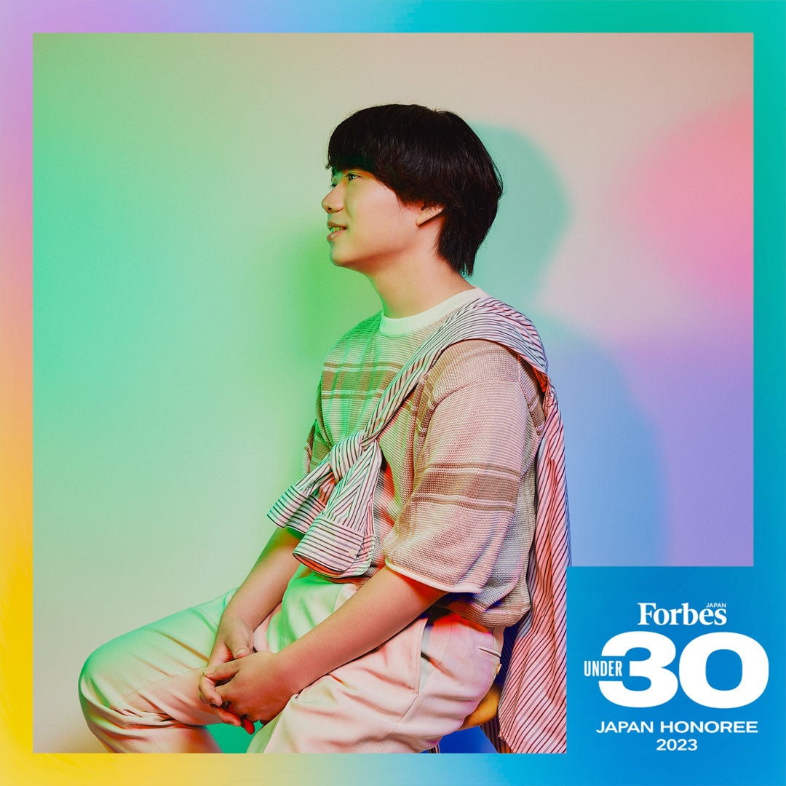
株式会社PoliPoli
代表取締役CEO
政策共創プラットフォームを運営。ZHD等から5億円超を調達。